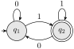
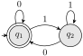
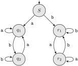

Section 2.2 Deterministic finite automata
Subsection 2.2.1 Class Activities
Activity 2.2.1.
Give diagrams or tables for DFAs accepting the following languages over the alphabet \(\{0,1\}\text{.}\) Make sure your answers include at least one table and one diagram.
- The set of all strings ending in 00
- The set of all strings with three consecutive 0s (not necessarily at the end)
- The set of all strings with 011 as a substring.
In the reading, you have seen how a DFA is like a very simple computer, modeled by walks on a directed graph. Each move in the walk is determined by the transition function of the DFA as we “consume” the characters in the input string one by one.
Activity 2.2.2.
For each pictured DFA, give a simple description of the language it accepts. Get the instructor to check before moving on.
(a)

(b)

(c)

When designing a DFA or other automaton, it can be helpful to imagine yourself as the DFA and consider your cognition as you read the input word one symbol at a time. What must you remember about the string? How do you perform the DFA’s task? It helps when doing this to remember that the word might be very long, so long you can’t remember it all at once. You also don’t know when the string will end, so you must always be ready with the answer.
Suppose that the alphabet is \(\Sigma = \{0,1\}\) and we wish to accept all words with an odd number of 1s. If you start going through a long input string of 0s and 1s, one symbol at a time, do you need to see the whole string? Do you need to remember any of it? No, you simply keep track of whether the number of 1s you have seen so far is even or odd.
This gives a clue to the design of the DFA. There are two states \(q_0\) and \(q_1\text{,}\) corresponding to having seen an even or odd number of 1s so far. We begin in state \(q_0\text{,}\) since at the beginning, we haven’t “seen” any symbols and in particular have seen no 1s. Now the transitions should be clear: all transitions labeled with \(0\) are self-loops, since the number of 1s does not change. Similarly, each transition labeled with \(1\) changes state, because whenever we read a 1, the number of 1s seen so far changes parity.
There is just one accepting state, state \(q_1\text{,}\) because that is the condition for having seen an odd number of 1s so far. If we are in state \(q_1\) when the input ends, we win; otherwise, our string must be rejected.
Activity 2.2.3.
Give a transition diagram and transition table for each language. Get the instructor to check before you go on.
- Words on \(\Sigma = \{a, b\}\) with an odd number of b.
- Words on \(\Sigma = \{0, 1\}\) that start with 000.
- Words on \(\Sigma = \{0, 1\}\) that end in 11.
Activity 2.2.4.
Give DFAs accepting the following languages over the alphabet \(\{0,1\}\text{:}\)
- The set of all strings \(x\) beginning with a 1 such that, when \(x\) is interpreted as a binary integer, it is a multiple of 3. For example, strings 0, 11, 110, and 1111 are in the language, while 10, 100, and 111 are not.
- The set of all such strings that, when interpreted in reverse as binary integers, are multiples of 3. Examples of strings in the language are 0, 00011, and 1001000. Observe there is no restriction on the leading digit in this part.
Hint.
There is an interpretation with 3 states using ideas from modular arithmetic.
Activity 2.2.5.
Make a DFA that is equivalent to the marble-rolling toy of Activity 2.1.1. This will take some thought. I did it with 16 states originally, and 13 of them turned out to be accessible.
Activity 2.2.6.
Recall that if \(A = (Q, \Sigma, q_0, \delta, F)\) is an automaton, we defined the extended transition function inductively for a word \(x = ya\) (where \(\abs{y} \geq 0\) ) by
\begin{equation*}
\hat{\delta}(q, x) = \begin{cases}
q \amp \text{if $\abs{x} = 0$} \\
\delta(\hat{\delta}(q, y), a) \amp
\text{if $x = ya$}.
\end{cases}
\end{equation*}
However, we think informally about \(\hat{\delta}\) as describing what happens along a path with a certain string of labels. So it should not matter how we break the input string in the definition of \(\hat{\delta}\text{.}\) That is, we should be able to use any factorization \(x = yz\text{,}\) not just one with \(\abs{z} = 1\text{.}\) Use induction on \(\abs{z}\) to prove that
\begin{equation*}
\hat{\delta}(q, yz) = \hat{\delta}(\hat{\delta}(q, y), z)\text{.}
\end{equation*}
Activity 2.2.7.
Show that for any state \(q\text{,}\) string \(x\text{,}\) and input symbol \(a\text{,}\)
\begin{equation*}
\hat{\delta}(q, ax) = \hat{\delta}(\delta(q, a), x)\text{.}
\end{equation*}
Hint.
Use the result of Activity 2.2.6.
Activity 2.2.8.
Give DFAs accepting the following languages over the alphabet \(\{0,1\}\text{:}\)
- The set of all strings such that each block of 5 consecutive symbols contains at least two 0s
- The set of all string whose tenth symbol from the right is a 1
- The set of strings that either begin or end (or both) with 01
- The set of strings such that the number of 0s is divisible by 5 and the number of 1s is divisible by 3
Activity 2.2.9.
Let \(A\) be a DFA and \(q\) a particular state of \(A\text{,}\) such that \(\delta(q, a) = q\) for all \(a \in \Sigma\text{.}\) Show by induction on \(\abs{w}\) that \(\hat{\delta}(q, w) = q\) for all input words \(w\text{.}\)
Activity 2.2.10.
Let \(A\) be a DFA and \(q\) a particular state of \(A\text{,}\) such that \(\delta(q, a) = q\) for all \(a \in \Sigma\text{.}\)
- Show by induction on \(n\) that for all \(n \geq 0\text{,}\) \(\hat{\delta}(q, a^n) = q\text{,}\) where \(a^n\) is the string consisting of \(n\) \(a\)’s.
- Show that either \(\{a\}^{\ast} \subseteq L(A)\) or \(\{a\}^{\ast} \cap L(A) = \varnothing\text{.}\)
We use the exponential notation for concatenation of words as well as individual input symbols from \(\Sigma^{\ast}\text{.}\)
Activity 2.2.11.
Let \(A = (Q, \Sigma, \delta, q_0, \{q_f\})\) be a DFA, and suppose that for all \(a \in \Sigma\) we have
\begin{equation*}
\delta(q_0, a) = \delta(q_f, a)\text{.}
\end{equation*}
- Show that for all \(w \ne \varepsilon\) we have \(\hat{\delta}(q_0, w) = \hat{\delta}(q_f, w)\text{.}\)
- Show that if \(x\) is a nonempty string in \(L(A)\text{,}\) then for all \(k > 0\text{,}\) then \(x^k\text{,}\) the \(k\)-fold concatenation of \(x\text{,}\) is also in \(L(A)\text{.}\)
Activity 2.2.12.
Consider the DFA with the following transition table:
| 0 | 1 | |
|---|---|---|
| \(\to A\) | \(A\) | \(B\) |
| \(\ast B\) | \(B\) | \(A\) |
Informally describe the language accepted by this DFA, and prove by induction on the length of the input that your description is correct.
Hint.
When setting up the inductive hypothesis, it is wise to make a statement about what inputs get you to each state, not just what inputs get you to the accepting state.